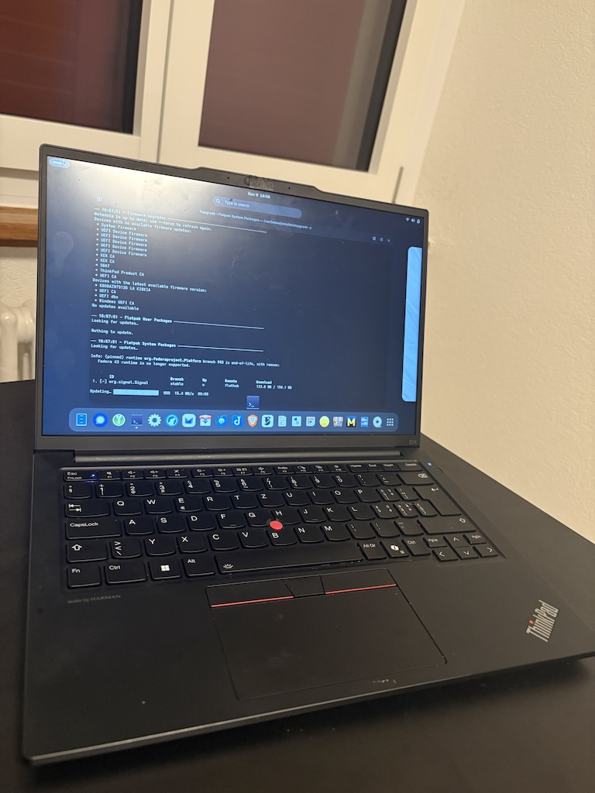
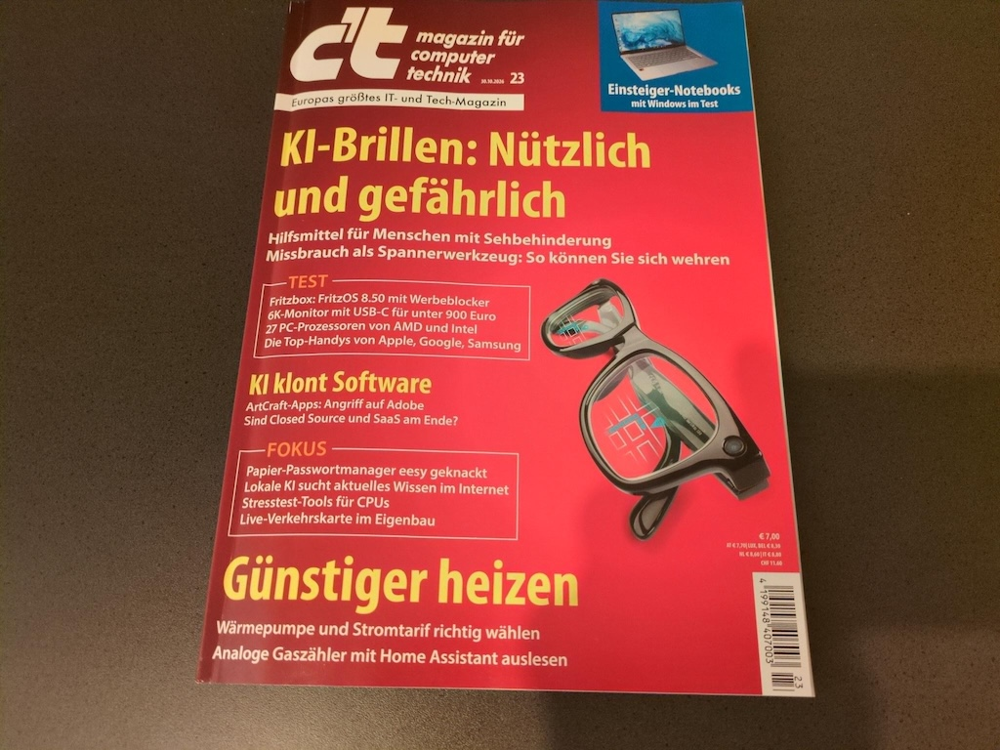
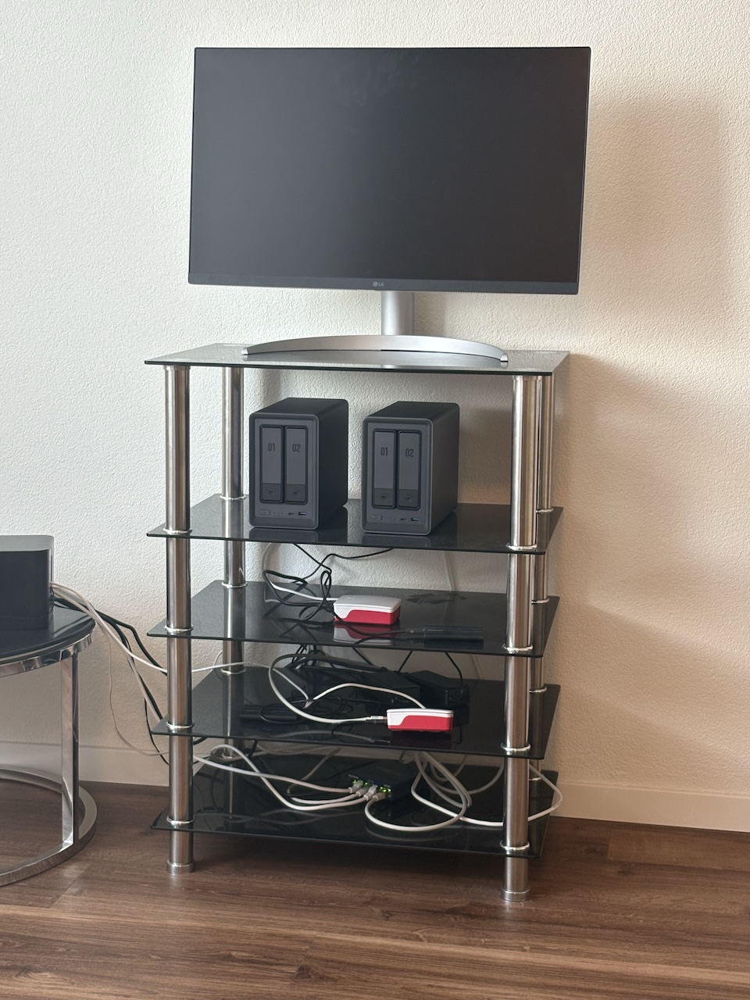
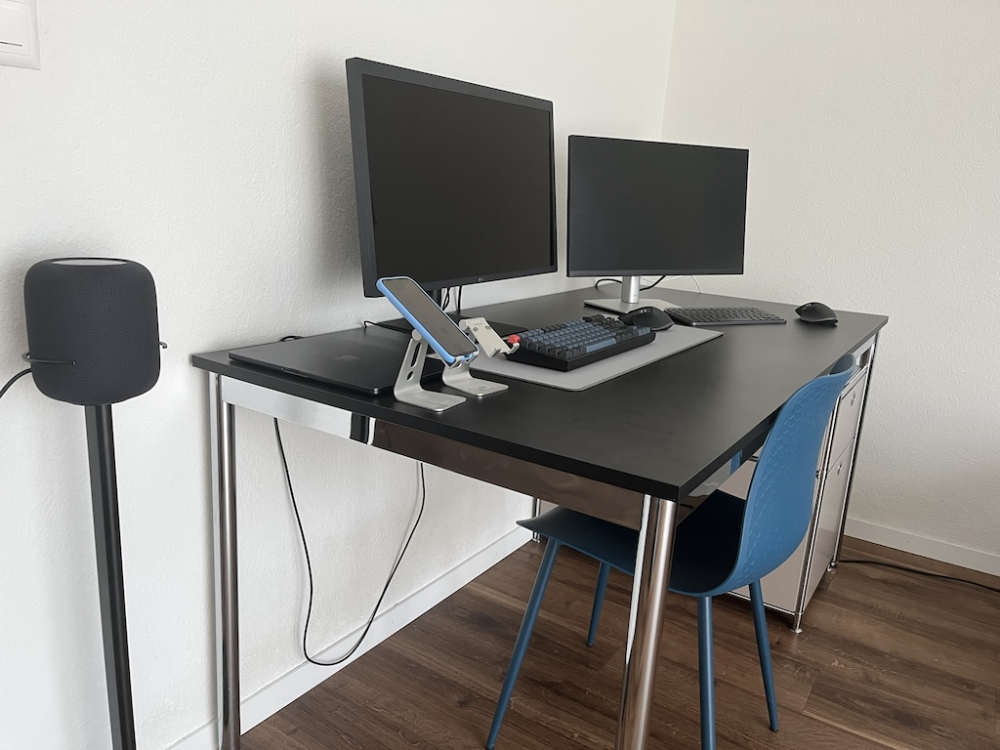
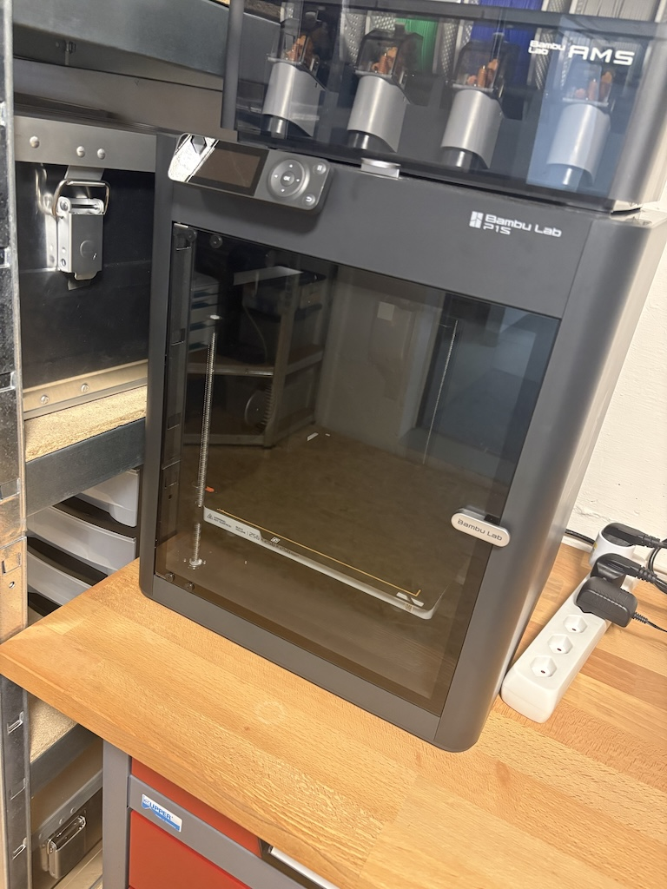

ps -ef output — meaning I knew the processes by name. Today the kernel spawns things I’ve never heard of and it’s just tradition to nod along.




Software
Brewfile
# Codec library for encoding and decoding AV1 video streams
brew "aom"
# Library for manipulating PNG images
brew "libpng"
# Software library to render fonts
brew "freetype"
# C string library for manipulating Unicode strings
brew "libunistring"
# GNU internationalization (i18n) and localization (l10n) library
brew "gettext"
# XML-based font configuration API for X Windows
brew "fontconfig"
# Perl compatible regular expressions library with a new API
brew "pcre2"
# Core application library for C
brew "glib"
# Real-time data compression library
brew "lzo"
# Low-level library for pixel manipulation
brew "pixman"
# Vector graphics library with cross-device output support
brew "cairo"
# Manage your dotfiles across multiple diverse machines, securely
brew "chezmoi"
# GNU multiple precision arithmetic library
brew "gmp"
# GNU File, Shell, and Text utilities
brew "coreutils"
# General-purpose data compression with high compression ratio
brew "xz"
# Get a file from an HTTP, HTTPS or FTP server
brew "curl"
# Library and utilities for processing GIFs
brew "giflib"
# TIFF library and utilities
brew "libtiff"
# Image format providing lossless and lossy compression for web images
brew "webp"
# Color management engine supporting ICC profiles
brew "little-cms2"
# Library for command-line editing
brew "readline"
# Command-line interface for SQLite
brew "sqlite"
# Perl lib for reading and writing EXIF metadata
brew "exiftool"
# High quality MPEG Audio Layer III (MP3) encoder
brew "lame"
# VP8/VP9 video codec
brew "libvpx"
# Audio codec
brew "opus"
# SDL2 compatibility layer that uses SDL3 behind the scenes
brew "sdl2-compat"
# H.264/AVC encoder
brew "x264"
# H.265/HEVC encoder
brew "x265"
# Play, record, convert, and stream select audio and video codecs
brew "ffmpeg"
# LLVM's OpenMP runtime library
brew "libomp", link: true
# Collection of GNU find, xargs, and locate
brew "findutils"
# Ogg Bitstream Library
brew "libogg"
# Free lossless audio codec
brew "flac"
# Minimalistic plugin API for video effects
brew "frei0r"
# Implementation of the Unicode BiDi algorithm
brew "fribidi"
# C library for multiple-precision floating-point computations
brew "mpfr"
# GNU awk utility
brew "gawk"
# Toolkit for image loading and pixel buffer manipulation
brew "gdk-pixbuf"
# Smart font renderer for non-Roman scripts
brew "graphite2"
# OpenType text shaping engine
brew "harfbuzz"
# JBIG2 decoder and library (for monochrome documents)
brew "jbig2dec"
# Library for JPEG-2000 image manipulation
brew "openjpeg"
# Image processing and image analysis library
brew "leptonica"
# International domain name library
brew "libidn"
# OCR (Optical Character Recognition) engine
brew "tesseract"
# Interpreter for PostScript and PDF
brew "ghostscript"
# Distributed revision control system
brew "git"
# C library of Git core methods that is re-entrant and linkable
brew "libgit2"
# Regular expressions library
brew "oniguruma"
# Cryptography and SSL/TLS Toolkit
brew "openssl@3"
# Syntax-highlighting pager for git and diff output
brew "git-delta"
# Git extension for versioning large files
brew "git-lfs"
# Render markdown on the CLI
brew "glow"
# Command-line option parsing utility
brew "gnu-getopt"
# GNU implementation of the famous stream editor
brew "gnu-sed"
# GNU version of the tar archiving utility
brew "gnu-tar"
# International domain name library (IDNA2008, Punycode and TR46)
brew "libidn2"
# ASN.1 structure parser library
brew "libtasn1"
# Low-level cryptographic library
brew "nettle"
# Library to load and enumerate PKCS#11 modules
brew "p11-kit"
# GNU Transport Layer Security (TLS) Library
brew "gnutls"
# Common error values for all GnuPG components
brew "libgpg-error"
# Assuan IPC Library
brew "libassuan"
# Cryptographic library based on the code from GnuPG
brew "libgcrypt"
# X.509 and CMS library
brew "libksba"
# Library for USB device access
brew "libusb"
# New GNU portable threads library
brew "npth"
# Passphrase entry dialog utilizing the Assuan protocol
brew "pinentry"
# GNU Privacy Guard (OpenPGP)
brew "gnupg"
# Package compiler and linker metadata toolkit
brew "pkgconf"
# Generate introspection data for GObject libraries
brew "gobject-introspection"
# Generic library support script
brew "libtool"
# Library like getopt(3) with a number of enhancements
brew "popt"
# Command-line interface to libgphoto2
brew "gphoto2"
# Library for manipulating JPEG-2000 images
brew "jasper"
# High dynamic-range image file format
brew "openexr"
# Open h.265 video codec implementation
brew "libde265"
# ISO/IEC 23008-12:2017 HEIF file format decoder and encoder
brew "libheif"
# GNU grep, egrep and fgrep
brew "grep"
# Text-based UI library
brew "ncurses"
# Improved top (interactive process viewer)
brew "htop"
# Ping-like tool for HTTP requests
brew "httping"
# Tools and libraries to manipulate images in select formats
brew "imagemagick"
# Command-line interface for self-hosted photo manager Immich
brew "immich-cli"
# Lightweight and flexible command-line JSON processor
brew "jq"
# Subtitle renderer for the ASS/SSA subtitle format
brew "libass"
# Blu-Ray disc playback library for media players like VLC
brew "libbluray"
# Asynchronous event library
brew "libevent"
# C/C++ seam carving library
brew "liblqr"
# Library for parsing mms:// and mmsh:// network streams
brew "libmms"
# Shared library for libmediainfo
brew "libzen"
# Library to render SVG files using Cairo
brew "librsvg"
# Library for sample rate conversion of audio data
brew "libsamplerate"
# Vorbis general audio compression codec
brew "libvorbis"
# C library for files containing sampled sound
brew "libsndfile"
# High quality, one-dimensional sample-rate conversion library
brew "libsoxr"
# Transcode video stabilization plugin
brew "libvidstab"
# Clone of ls with colorful output, file type icons, and more
brew "lsd"
# Platform-neutral API for system-level and libc-like functions
brew "nspr"
# Libraries for security-enabled client and server applications
brew "nss"
# Python 3 bindings for the Cairo graphics library
brew "py3cairo"
# GNOME Python bindings (based on GObject Introspection)
brew "pygobject3"
# Metadata anonymization toolkit
brew "mat2"
# Unified display of technical and tag data for audio/video
brew "media-info"
# Deep clean and optimize your Mac
brew "mole"
# Audio time stretcher tool and library
brew "rubberband"
# Feature-rich command-line audio/video downloader
brew "yt-dlp"
# Media player based on MPlayer and mplayer2
brew "mpv"
# Adds an OCR text layer to scanned PDF files
brew "ocrmypdf"
# Audio codecs extracted from Android open source project
brew "opencore-amr"
# Password generator
brew "pwgen"
# Simple, modern, secure file encryption
brew "rage"
# Fast, efficient and secure backup program
brew "restic"
# Provides fake name and address data
brew "rig"
# Utility that provides fast incremental file transfer
brew "rsync"
# Tool for downloading RTMP streaming media
brew "rtmpdump"
# Rust toolchain installer
brew "rustup"
# 7-Zip is a file archiver with a high compression ratio
brew "sevenzip"
# Database of common MIME types
brew "shared-mime-info"
# Compression/decompression library aiming for high speed
brew "snappy"
# Audio codec designed for speech
brew "speex"
# Cross-shell prompt for astronauts
brew "starship"
# Enables extra languages support for Tesseract
brew "tesseract-lang"
# Open video compression format
brew "theora"
# Terminal image and video viewer
brew "timg"
# Upgrade all the things
brew "topgrade"
# Validating, recursive, caching DNS resolver
brew "unbound"
# Extraction utility for .zip compressed archives
brew "unzip"
# Clean C library for processing UTF-8 Unicode data
brew "utf8proc"
# Executes a program periodically, showing output fullscreen
brew "watch"
# Internet file retriever
brew "wget"
# High-performance, high-quality MPEG-4 video library
brew "xvid"
# Fish-like fast/unobtrusive autosuggestions for zsh
brew "zsh-autosuggestions"
# Monero desktop wallet
cask "feather"
# Terminal emulator that uses platform-native UI and GPU acceleration
cask "ghostty"
# Free and open-source media player
cask "iina"
# Note taking and to-do application with synchronisation capabilities
cask "joplin"
# Password manager app
cask "keepassxc"
# Wallet desktop application to maintain multiple cryptocurrencies
cask "ledger-wallet"
# Clipboard manager
cask "maccy"
# Web browser focused on privacy and on minimizing tracking and fingerprinting
cask "mullvad-browser"
# Free and open-source RSS reader
cask "netnewswire"
# G-code generator for 3D printers
cask "orcaslicer"
# Client for Proton Mail and Proton Calendar
cask "proton-mail"
# Imaging utility to install operating systems to a microSD card
cask "raspberry-pi-imager"
# Instant messaging application focusing on security
cask "signal"
# Customizable email client
cask "thunderbird"
# Web browser focusing on security
cask "tor-browser"
# Open-source BitTorrent client
cask "transmission"
# Companion app for the Trezor hardware wallet
cask "trezor-suite"
Last updated: · commit b7e4f3a